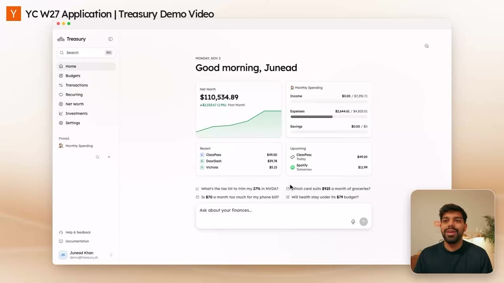
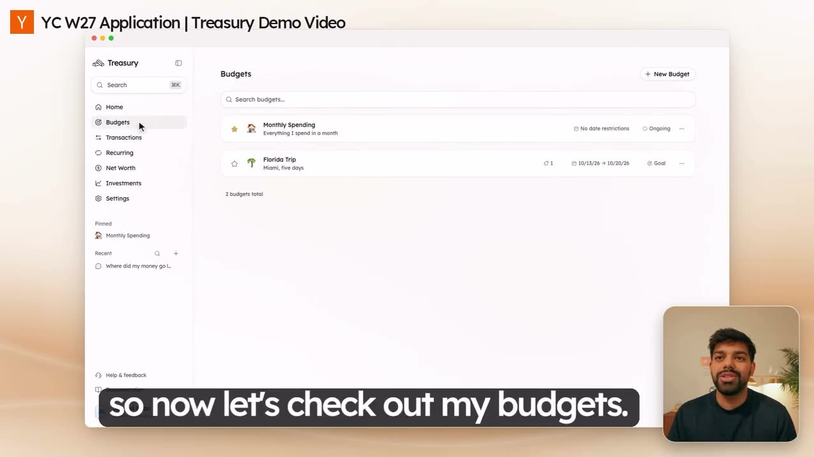
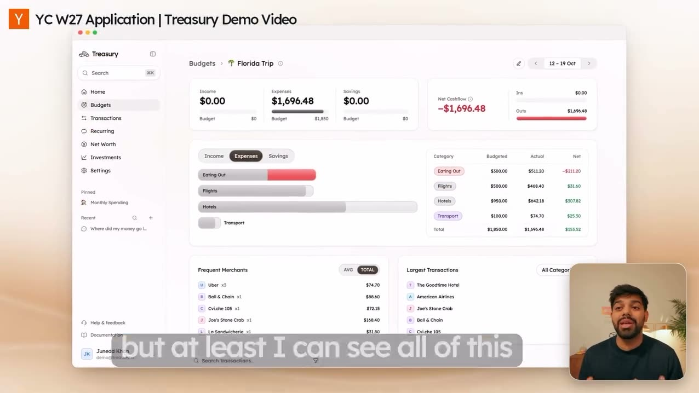
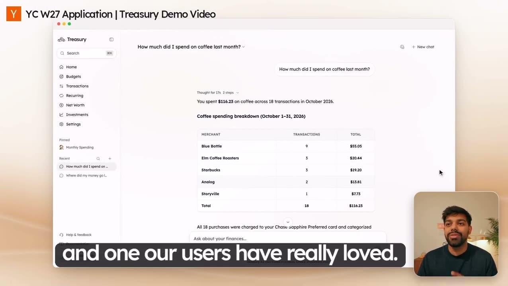
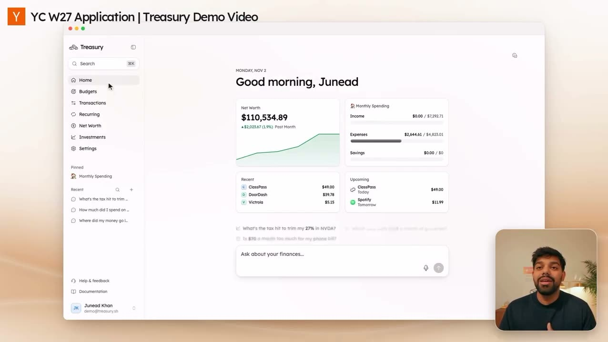
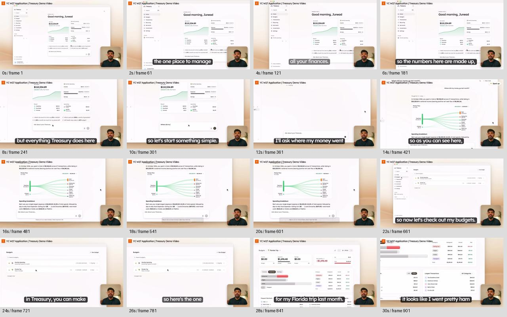
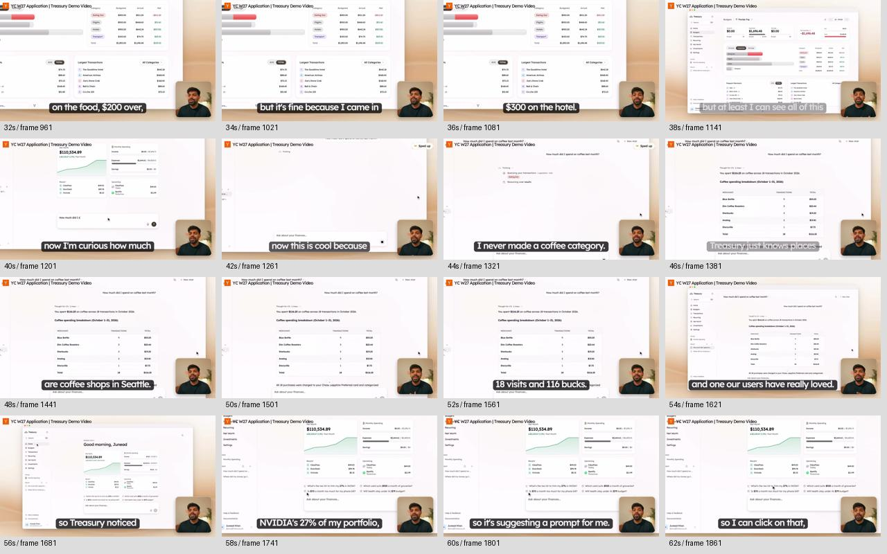
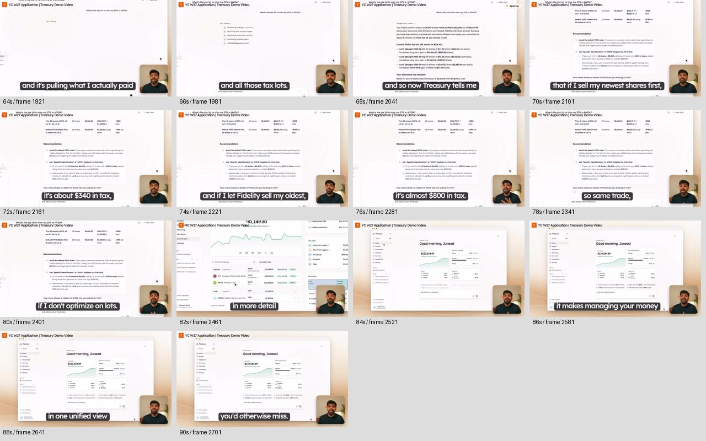

2,724 frames extracted at 30 fps. Contact sheets cover the complete video at two-second intervals. Selected full-window frames below retain the original narrator and captions; some lower-right content is occluded. These are the least-zoomed views, not unobstructed source screenshots.
Home: persistent sidebar, four small cards, quiet suggestions and composer

List: search, compact rows and a single creation action

Detail: breadcrumb, summary, then evidence rows

Conversation: same sidebar, restrained answer table, composer below

Return home: same visual structure without a new application shell

This local viewer needs the extracted frames in app/.local/video-reference/frames. Use the slider or step buttons.


